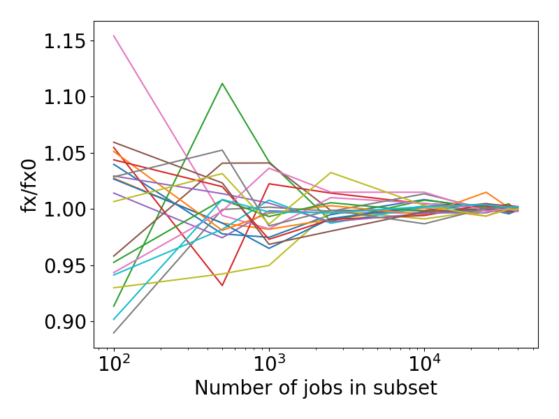

5.15.2. Working with Data Sets¶
The following features mainly work with the Data Set.
5.15.2.1. Data Set Sensitivity¶
Data Sets that require a large number of jobs for the evaluation will usually be the bottleneck of every parameter optimization. This class provides the possibility to estimate the diversity of a set prior to the fitting process. This is done by evaluating multiple smaller, randomly drawn subsets from the original set and reporting their loss function value. The values can then be compared to the full data set’s loss.
One example where this can be useful is when data sets are somewhat homogeneous.
In such cases it can be useful to search for
a smaller subset before training, thus reducing the optimization time.
A smaller subset is a compromise of the size and error in loss
function value as compared to the original set.
The SubsetScan class can be used as an aide in such cases.
Assuming a Data Set instance ds with reference, a Job Collection jc that can be used to generate the results needed for the evaluation of our data set, and a parameter interface x is defined:
len(ds)
# 45600
len(ds.jobids)
# 45975
# Our data set is huge, lets see if it can be reduced without sacrificing much accuracy
# Initialize with DataSet, JobCollection and ParameterInterface
scan = SubsetScan(ds, jc, x, loss='rmse')
# This attribute stores the loss function value of the initial DataSet `ds`
fx0 = scan.fx0
# Decide on the number of jobs we would like to consider for a subset:
steps = [100, 500, 1000, 2500, 10000, 25000, 35000, 40000]
# At each step, evaluate n randomly created subsets:
reps_per_step = 20
# Now start the scan:
fx = scan.scan(steps, reps_per_step)
# The result is an array of (len(steps), reps_per_steps)
assert fx.shape == (8,20)
# Lets visualize the results:
import matplotlib.pyplot as plt
plt.rcParams.update({'font.size':20})
dim = fx.shape[-1]
for i in range(dim):
plt.plot(steps, fx[:,i]/fx0)
plt.ylabel('fx/fx0')
plt.xlabel('Number of jobs in subset')
plt.xscale('log')
plt.tight_layout()
Note
If a results dictionary from JobCollection.run
has previously been calculated and is available, MinJobSearch can also be instantiated without
a job collection and parameter interface:
# Initialize with a results dictionary `results`
scan = MinJobSearch(ds, resultsdict=results, loss='rmse')
The resulting figure could look similar to the following,
{kind=link}
in this case highlighting that the reduction to a subset of 10000 jobs would lead to a relative error of under 5% when compared to the evaluation of the full data set.
Note
Note that this example was created on a data set with only one property and equal weights for each entry. Real applications might not result in such homogeneous behavior.
API
-
class
SubsetScan(data_set: scm.params.core.dataset.DataSet, job_collection: scm.params.core.jobcollection.JobCollection = None, par_interface=None, resultsdict: Dict = None, workers: int = None, use_pipe=True, loss='rmse')¶ This class helps in the process of identifying a
Data Set'ssensitivity to the total number of jobs by consecutively evaluating smaller randomly drawn subsets. The resulting loss values can be compared to the one from the complete data set to determine homgeneity and help with size reduction or diversification of the set (see documentation for examples).-
__init__(data_set: scm.params.core.dataset.DataSet, job_collection: scm.params.core.jobcollection.JobCollection = None, par_interface=None, resultsdict: Dict = None, workers: int = None, use_pipe=True, loss='rmse')¶ Initialize a new search instance.
Parameters: - data_set : DataSet
- The original data set instance. Will be used for subset generation. Reference values have to be present.
- job_collection : JobCollection
- Job Collection instance to be used for the results calculation
- par_interface : BaseParameters
- A derived parameter interface instance, the associated engine will be used for the results calculation
- resultsdict :
dict({'jobid' : AMSResults}), optional - Instead of providing a job collection and parameter interface,
an already calculated results dictionary can be passed.
In this case initial results calculation will be skipped.
The dict should be an output of
JobCollection.run(). - workers : int
- When calculating the results, determines the number of jobs to run in parallel. Defaults to os.cpu_count()/2.
- use_pipe : bool
- When calculating the results, determines whether to use the AMSWorker interface.
- loss : Loss, str
The loss function to be evaluated.
Important
Caution when using loss functions that do not average the error, such as the sum of squares error (sse). To ensure comparability loss values must be invariant to the data set size.
The
fx0attribute will store the initial data set’s loss function value.
-
scan(steps, reps_per_step=10)¶ Start the scan for data set subsets.
Parameters: - steps : List or Tuple
- A list of integers, each entry represents the number of jobs that the original data set will be randomly reduced to and then evaluated
- reps_per_step : int
- Repeat every step n times, randomly drawing differnt entries to generate the subset.
Returns: - fx : ndarray
- A 2d array of loss function values with the shape (len(steps), reps_per_step).
-
makesteps_exp(exponent: float, start: int = 10) → numpy.ndarray¶ Generate a number of exponentially increasing subset sizes such that
steps = [] while start <= len(ds.jobids): steps.append(int(start)) start **= exponent
-
plotscan(steps, fx, filepath=None, ylim=None, xlogscale=True, boxwidths=None, backend=None)¶ Create a boxplot for the given steps and fx values
Parameters: - steps : ndarray
- x values as returned by
scan() - fx : ndarray
- y values as returned by
scan() - filepath : str
- Path where the figure will be stored. If None, will plt.show() instead.
- ylim : Tuple[float, float]
- Lower/upper y limits on the plot
- xlogscale : bool
- Apply logarithmic scaling to the x-Axis. Choose depending on the spacing of steps
- boxwidths : float or sequence of floats
- Use this setting to adjust the box width
- backend : str
- The matplotlib backend to use
-
5.15.2.2. Normalization of Data Set Weights¶
-
normalize_weights(ds: scm.params.core.dataset.DataSet, resultsdict: Dict[str, scm.plams.interfaces.adfsuite.ams.AMSResults], extractors: List[str], set_best=True, loss='rmse', maxiter=1000, verbose=True)¶ Normalize a data set’s, weights by minimizing the standard deviation of all individual contributions in that data set.
This is done through the optimization of a weights vector, where each weight is applied to all entries with the same extractor, e.g. for a data set that contains forces and energies, all entries’ weights that contain the former extractor will be optimized to one value, and weights of the latter to a different value.Note
New weights are applied through multiplication with the initial values, in order to preserve the shape, i.e.,
w_new = w_0 * x. Consider setting relevant initial weights to 1. if this is not the desired behavior.Example: >>> jc = JobCollection() >>> ... # populate the job collection >>> ds = DataSet() >>> ... # populate the data set and calculate the reference values, assuming we are adding energies, forces and charges >>> results = jc.run(interface) # run all jobs needed for the evaluation of ds >>> minres = normalize_weights(ds, results, extractors=['energy', 'forces', 'charges']) >>> minres.x array([ 2.37, 27.59, 1. ]) >>> ds.energy()[0].weight 2.37 >>> ds.forces()[0].weight 27.59 >>> ds.charges()[0].weight 1.
Parameters: - ds: DataSet
- Data Set instance to be evaluated
- resultsdict: dict
- A {name:AMSResults} dict with results that can be used to evaluate ds
- extractors : List of strings
- List of extractors that should be considered for the minimization. Should all be present in the Data Set, will raise a error otherwise
- set_best : bool
- Whether to set the weights after the optimization or not
- loss : str
- The ParAMS loss to use
- maxiter : int
- Number of maximum function evaluations
- verbose : bool
- Whether to print initial and final losses (std deviation of the contributions vector)
Returns: minres : scipy.minimizeresult